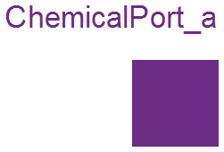
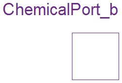
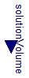
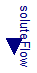

Concentration and expected positive Solute inflow

Connector with one flow signal of type Real.
Extends from ChemicalPort (Concentration and Solute flow).
| Type | Name | Description |
|---|---|---|
| Concentration | conc | Solute concentration [mol/m3] |
| flow MolarFlowRate | q | Solute flow [mol/s] |
2009-2010
Marek Matejak, Charles University, Prague, Czech Republic
Concentration and expected negative Solute outflow

Connector with one flow signal of type Real.
Extends from ChemicalPort (Concentration and Solute flow).
| Type | Name | Description |
|---|---|---|
| Concentration | conc | Solute concentration [mol/m3] |
| flow MolarFlowRate | q | Solute flow [mol/s] |
2009-2010
Marek Matejak, Charles University, Prague, Czech Republic
Extends from Modelica.Icons.InterfacesPackage (Icon for packages containing interfaces).
| Name | Description |
|---|---|
| ChemicalPort | Concentration and Solute flow |
| ChemicalPort_a | Concentration and expected positive Solute inflow |
| ChemicalPort_b | Concentration and expected negative Solute outflow |
| OnePort | Partial transfer of solute beween two ports without its accumulation |
| ConditionalHeatPort | Partial model to include a conditional HeatPort in order to describe the power loss via a thermal network |
| ConditionalVolume | Chemical processes can be modeled with or without(normalized to 1 liter) variable solvent volume |
| ConditionalSolutionFlow | Input of solution volumetric flow vs. parametric solution volumetric flow |
| ConditionalSoluteFlow | Input of solute molar flow vs. parametric solute molar flow |
| SubstanceDefinition | Invariant properties of substance (molar weight, enthalpy, entropy, ...) |
Concentration and Solute flow
| Type | Name | Description |
|---|---|---|
| Concentration | conc | Solute concentration [mol/m3] |
| flow MolarFlowRate | q | Solute flow [mol/s] |
2009-2010
Marek Matejak, Charles University, Prague, Czech Republic
Partial transfer of solute beween two ports without its accumulation
| Type | Name | Description |
|---|---|---|
| ChemicalPort_b | q_out | |
| ChemicalPort_a | q_in |
Partial model to include a conditional HeatPort in order to describe the power loss via a thermal network
This partial model provides a conditional heating port for the connection to a thermal network.
If this model is used, the loss power has to be provided by an equation in the model which inherits from ConditionalHeatingPort model (lossPower = ...). As device temperature T_heatPort can be used to describe the influence of the device temperature on the model behaviour.
| Type | Name | Default | Description |
|---|---|---|---|
| External inputs/outputs | |||
| Boolean | useHeatPort | false | =true, if HeatPort is enabled |
| Temperature dependence | |||
| Temperature | T | 310.15 | Fixed device temperature if useHeatPort = false [K] |
| Type | Name | Description |
|---|---|---|
| HeatPort_a | heatPort |
Chemical processes can be modeled with or without(normalized to 1 liter) variable solvent volume

| Type | Name | Default | Description |
|---|---|---|---|
| External inputs/outputs | |||
| Boolean | useNormalizedVolume | true | =true, if solvent volume is 1 liter |
| Type | Name | Description |
|---|---|---|
| input VolumeInput | solutionVolume | [m3] |
Input of solution volumetric flow vs. parametric solution volumetric flow
| Type | Name | Default | Description |
|---|---|---|---|
| VolumeFlowRate | SolutionFlow | 0 | Volumetric flow of solution if useSolutionFlowInput=false [m3/s] |
| External inputs/outputs | |||
| Boolean | useSolutionFlowInput | false | =true, if solution flow input is used instead of parameter SolutionFlow |
| Type | Name | Description |
|---|---|---|
| input VolumeFlowRateInput | solutionFlow | [m3/s] |
Input of solute molar flow vs. parametric solute molar flow

| Type | Name | Default | Description |
|---|---|---|---|
| MolarFlowRate | SoluteFlow | 0 | Volumetric flow of solute if useSoluteFlowInput=false [mol/s] |
| External inputs/outputs | |||
| Boolean | useSoluteFlowInput | false | =true, if solute flow input is used instead of parameter SoluteFlow |
| Type | Name | Description |
|---|---|---|
| input MolarFlowRateInput | soluteFlow | [mol/s] |
Invariant properties of substance (molar weight, enthalpy, entropy, ...)
| Type | Name | Default | Description |
|---|---|---|---|
| String | fullName | getInstanceName() | Full physiological name of substance |
| String | shortName | getInstanceName() | Short physiological name of substance |
| MolarMass | mw | Molar weight in kg/mol or kDa [kg/mol] | |
| MolarEnergy | dH | 0 | Enthalpy [J/mol] |
| MolarEnergy | dS | 0 | Entropy [J/mol] |
| AmountOfSubstance | molpIU | 1 | Pharmacological international unit conversion: mols per IU (or 1 if unknown) [mol] |
| AmountOfSubstance | molpGU | 1 | Goldblatt unit conversion: mols per GU (or 1 if unknown) [mol] |
| String | storeUnit | "mmol/l" | Default substance unit in files or databaseses |
| RealTypeRecord | unitConversions[:] | cat(1, Types.Utilities.UnitC... |